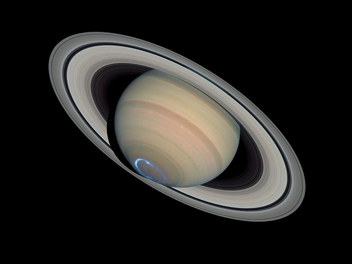
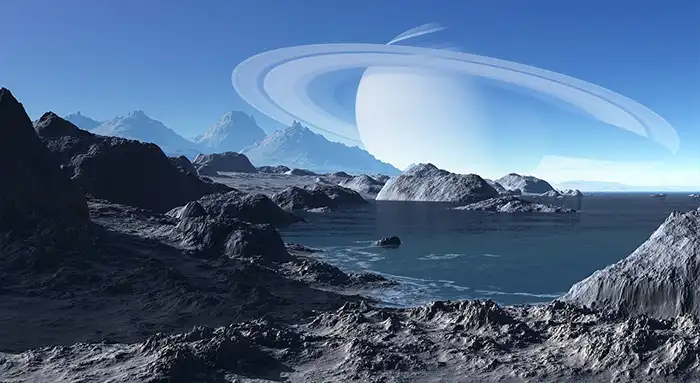
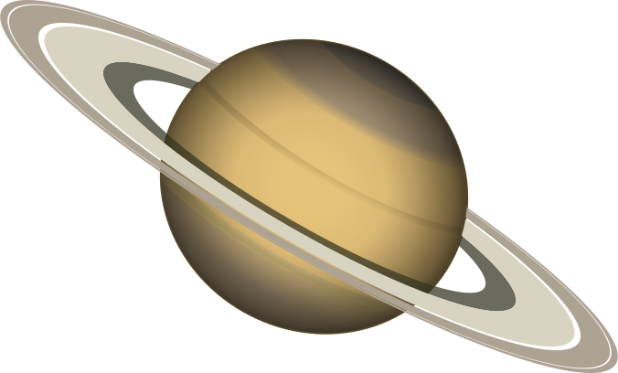

This image is a .jpg (JPEG) file
- Better for photographic type images(continuous tone)
- Millions of colors(16.7 million)
- Lossy compression(throws out information to reduce file size)
- No transparency
- No animation
- Has a newer version(jpeg 2000)
- Reduce file size by increasing compression(which reduces quality)

This image is a .gif (GIFF) file
- Better for images with large areas of flat color like graphics, logos, etc.
- Lossless compression(although adobe now has lossy gifs)
- 256 colors or less
- Allows animation
- Allows 1 bit transparency(each pixel is either completely transparent or opaque)
- Reduce file size by reducing the number of colors
This image is a .png (PNG) file
- 2 versions(8bit and 24 bit)
- PNG preserves full transparency in grayscale and RGB images using alpha channels, but may
result in larger files than jpg (using PNG-24)
- Poorer browser support in older browsers like IE6(Transparency in PNG 24 files will not
work)
- PNG format supports RGB, indexed-color, grayscale, and Bitmap-mode images without alpha
channels

This image is a .webp (WEBP) file
- A newer image format that provides superior lossless and lossy compression
- WebP lossless images are 26% smaller in size compared to PNGs. WebP lossy images are 25-34%
smaller than comparable JPEG images at equivalent quality.
- Supports transparency
- Uses compression technology derived form the VP8 video codec( from Google)

This image is an SVG file
- Stands for Scalable Vector Graphics
- Not based on pixels, but descriptions of shapes, colors, etc.
- May have once been promoted as an alternative to Flash based images
- Small file size
- Scales without degradation, since it is vector based(resolution independant)
- Looks good on high res displays
- Does not work in IE 8 and down or Android 2.3 and down
- Can be used for backgrounds
- Can be directly embedded like Data URIs
- Can be modified by CSS, since is like XML
- Has filters that can be applied
- More info on SVG images at CSS-Tricks
- More info on SVG images at Wikipedia
- The example image below is 477KB
